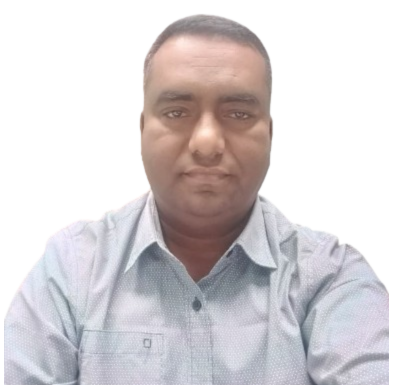

Website Design
Modern layouts, visual hierarchy and clear page structure.
WEB DESIGNER • DEVELOPER • WORDPRESS EXPERT
I create professional, responsive websites and WordPress solutions with a focus on usability, clear design and performance.

GET TO KNOW ME
I'm a Web Designer and Developer with more than 2 years of experience creating professional websites and WordPress solutions for clients across different industries. I have contributed to over 160 completed projects.
My work includes website design, custom development, WordPress setup and customization, responsive layouts and website performance improvements. I focus on understanding project requirements and turning them into clear, practical and user-friendly website experiences.
I am based in Gazipur, Bangladesh, and interested in remote roles, freelance projects and long-term collaborations with international clients.
WHAT I WORK WITH
Modern layouts, visual hierarchy and clear page structure.
Website setup, customization and content management.
Custom website development and front-end implementation.
Layouts for desktop, tablet and mobile screens.
Practical website speed and performance improvements.
Clear communication and understanding project requirements.
HOW I CAN HELP
Professional websites that communicate your services, build credibility and help customers connect with your business.
WordPress setup, customization, page development and ongoing website improvements.
Website pages and features shaped around your project requirements and user journey.
Website layouts designed to work across desktop, tablet and mobile screen sizes.
Practical improvements focused on website speed, usability and overall performance.
MY PROFESSIONAL JOURNEY
Independent / Freelance • Remote
Independent / Freelance • Remote
Bachelor of Commerce (B.Com Honours) in Accounting
Bhawal Badre Alam Government College
Passing year: 1999 • Second Division
LET'S WORK TOGETHER
Feel free to contact me about a project, remote opportunity or collaboration.
Email MeGazipur District, Dhaka, Bangladesh